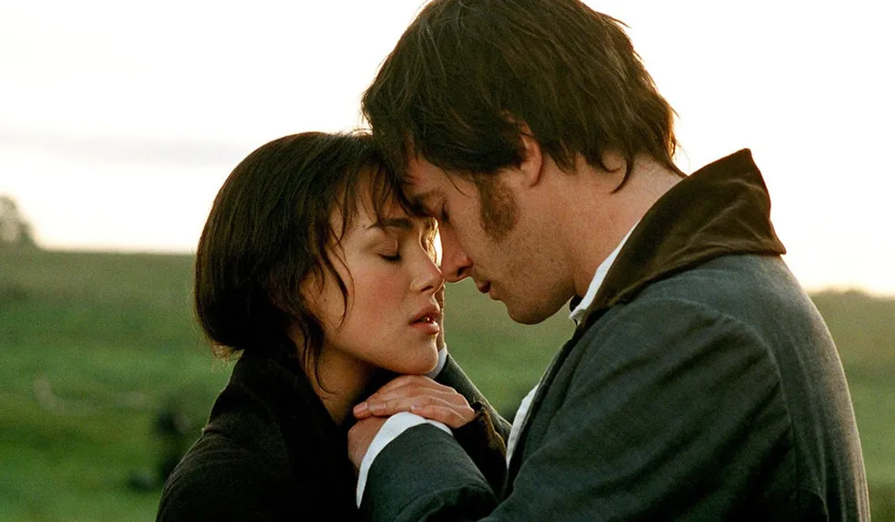
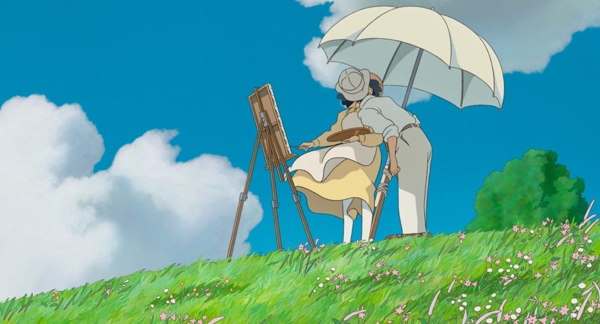
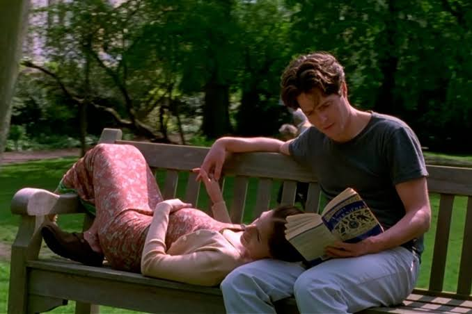
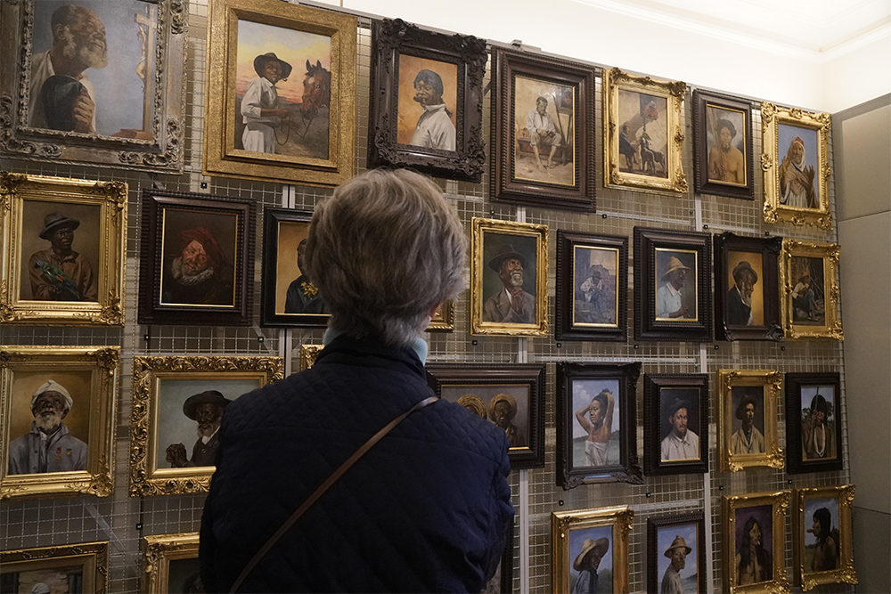
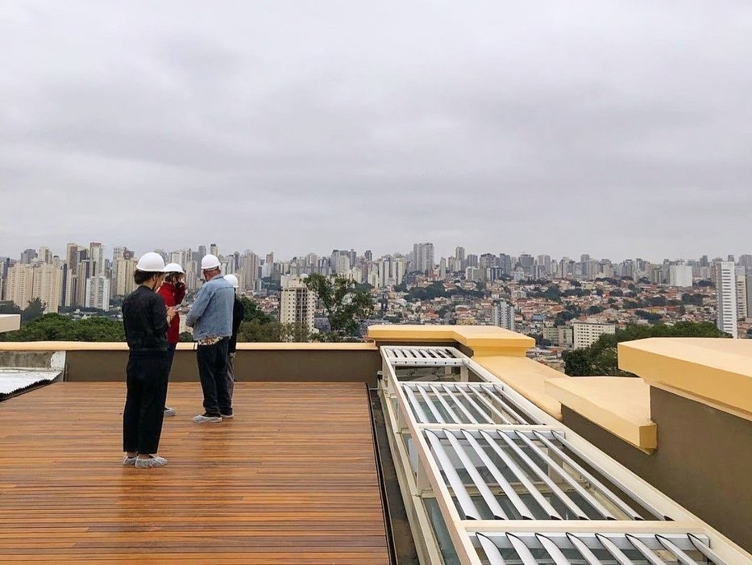

Feliz dia dos namorados meu amor, escolha nosso programa especial para hoje:
Hoje vamos desacelerar, preparar uma pipoca, escolher um bom filme e aproveitar um momento só nosso.
Sem pressa, sem compromissos... apenas nós dois curtindo uma noite especial ❤️
Joel (Jim Carrey) fica completamente arrasado ao descobrir que sua ex-namorada, a impulsiva Clementine (Kate Winslet), submeteu-se a um tratamento médico experimental e secreto para apagar todas as memórias do relacionamento deles. Magoado e querendo superar a dor do término, Joel decide passar pelo mesmo procedimento neurocientífico. No entanto, enquanto a máquina começa a deletar suas lembranças em ordem cronológica inversa (das piores brigas até os momentos em que se apaixonaram), Joel percebe, dentro de seu próprio subconsciente, que ainda a ama desesperadamente e não quer esquecê-la. Ele inicia, então, uma corrida surrealista e frenética dentro da própria mente para tentar esconder Clementine em memórias de sua infância e salvar o amor de sua vida antes que o processo termine.

Na Inglaterra do século XIX, a vida das cinco irmãs Bennet vira de cabeça para baixo com a chegada de um jovem aristocrata rico, o Sr. Bingley, e seu misterioso e ainda mais rico amigo, o Sr. Darcy. Enquanto a romântica Jane se encanta por Bingley, a perspicaz e independente Elizabeth entra em rota de colisão com o arrogante Darcy. Entre bailes luxuosos, fofocas da alta sociedade e pressões familiares para casar por interesse, Elizabeth e Darcy iniciam um jogo psicológico de gato e rato, onde a forte atração mútua é mascarada pelo orgulho dele e pelo preconceito dela.

Vidas ao Vento (The Wind Rises) acompanha a emocionante jornada de Jiro Horikoshi, um jovem apaixonado pela aviação que, impedido de pilotar por causa de sua forte miopia, decide se tornar engenheiro aeronáutico. Conforme ele se dedica ao sonho de criar o avião perfeito, sua vida se entrelaça com eventos históricos marcantes, como o Grande Terremoto de Kanto de 1923 e a Crise Econômica. O filme atinge seu ponto mais profundo ao contrastar o desabrochar de um grande amor com um doloroso dilema moral: Jiro descobre que suas belas criações e o sonho de uma vida inteira serão utilizados pelo Japão como destrutivas armas de guerra.

William Thacker (Hugh Grant) é um homem comum, divorciado e dono de uma pacata livraria especializada em guias de viagem no charmoso bairro londrino de Notting Hill. Sua rotina pacata vira de cabeça para baixo quando Anna Scott (Julia Roberts), a maior e mais famosa estrela de cinema de Hollywood, entra em sua loja.Após um segundo esbarrão acidental no meio da rua, onde ele derrama suco na roupa dela, surge uma faísca inesperada. Contra todas as probabilidades, os dois iniciam um romance. No entanto, eles logo precisam enfrentar o maior desafio de todos: é possível manter um amor real quando um dos lados vive sob os holofotes implacáveis da fama e dos paparazzi?
Vamos passear por um dos lugares mais bonitos de São Paulo, conhecer exposições históricas e aproveitar os jardins.
Vista incrível para fotos.

Um pouco da história do Brasil.

Visão geral da parte externa do museu